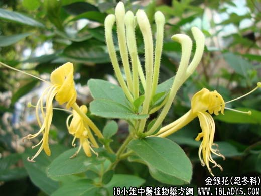

【中药概述】
金银花为忍冬科藤本植物忍冬的花蕾。甘、寒。归肺、胃、大肠经。
1．宣散风热：用于外感风热及温病发热，初起有表证者，如（温病条辨<银翘散>）；若热入气分，壮热、烦渴、脉洪大者，银花，连翘合<白虎汤>。
2．清热解毒：用于热毒痈肿、疔疖、咽喉肿痛等证，可单用，或配野菊花，蒲公英，紫花地丁等。
3．凉血止血：用于热毒泻痢，或温热病营分证等，可单用浓煎服，如<清营汤>。
4．肺热咳嗽：用于发热，咳嗽咯黄稠痰，或气急胸痛，常见急性气管炎、肺炎等，配鱼腥草，瓜蒌，并与麻杏石甘汤合用，疗效良好（金银花鱼腥草用量在30g以上，煎时后下）。
【药效鉴别】
银花能消散上焦风热而解表，既清风温之热，又解血中之毒，偏于透上半身之热。
【临证应用】
大叶肺炎初起时，可用本品配杏仁，连翘，牛蒡子，桔梗，薄荷等同用；如肺热咳喘时，可配麻黄，生石膏，杏仁，生甘草，连翘，黄芩，知母，薄荷等同用。
【药理作用】
有广谱抗菌作用，对金黄色葡萄球菌、白色葡萄球菌、甲、乙型溶血性链球菌，非溶血性链球菌、伤寒、痢疾、结核杆菌、肺炎双球菌等有抑制作用。
【化学成分】
含氯原酸、异氯原酸、新氯原酸、多种咖啡酰鸡纳酸等。
【用量用法】
10——100g，水煎服，或入剂。外用适量。